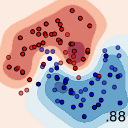

AI and Advanced JSON context profiles
Turning images into an “Advanced JSON context profile” and back into images with ChatGPT and Gemini
Turning images into an “Advanced JSON context profile” and back into images with ChatGPT and Gemini
Exploring Prompt Framing, Confirmation Bias, and AI Compliance
Experiment how well ChatGPT can play the association game “Code Names” (2023 Edition)
It saved me hundreds of hours as a data scientist
How powerful is ChatGPT? Can it replace your job?
A guide for software developers and operations

"Data is the new oil", "we need to be data-driven", "we need to apply AI to keep being competitive" are some of the phrases I hear a lot. As I haven't seen a clear article yet pointing out what is done with the data ... here you are 🙂 Why it's complicated …

Siamese Networks are feature extractors trained to learn an embedding in \(\mathbb{R}^n\) where not the absolute output is important, but the relative one. The original paper[1] was about signature verification. You have one original signature and one that might be the same or might be a different …
WiLI-2018, the Wikipedia Language Identification database, is a collection of sentences from Wikipedia of different languages. It can be used to test how hard it is to distinguish different languages. If you want to get to the data, go to zenodo.org. If you want to get to the publication …
This is an article I had for quite a while as a draft. As part of my yearly cleanup, I've published it without finishing it. It might not be finished or have other problems. Science fiction movies are full of advanced systems for medical analysis and treatment: Stargate SG1: The …